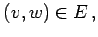
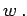
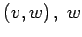
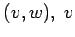
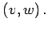

Inhalt Index DeskTop Bronstein

 Algebra und Diskrete Mathematik Algorithmen der Graphentheorie Grundbegriffe und Bezeichnungen
Algebra und Diskrete Mathematik Algorithmen der Graphentheorie Grundbegriffe und Bezeichnungen


Gilt  dann heißt der Knoten v adjazent, d.h. benachbart, zum Knoten  Der Knoten v heißt Startpunkt von  heißt Zielpunkt von  und w heißen Endpunkte von 
Entsprechend werden die Adjazenz in ungerichteten Graphen und die Endpunkte von ungerichteten Kanten definiert.